I Florarna finns de vanliga arterna såsom svenskhare, tyskhare, rådjur, ekorre, mink, räv, vildsvin och älg.
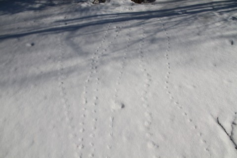
Mycket gnagarspår vårvintern 2013. Dessa vid Nydiket (Gammelån)/ Mörkmossen. Foto: Ronny Fredriksson
Florarna är ett eldorado för dig som gillar spår. När myrarna är ordentlig frusna och snön lagt sig på dem….och det är lite nysnö…..oj vilka spårupplevelser du kan få. Titta på nedanstående bild :-)
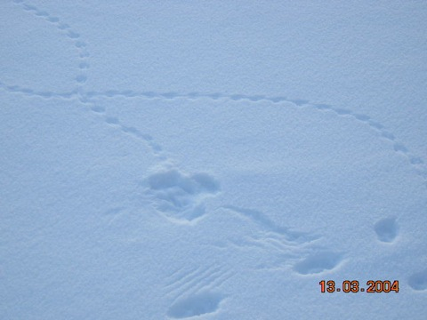
Vad kan du utröna av dessa spår som jag hittade i snön på Lilla Agnsjöns is? Foto: Ronny Fredriksson
Jag tror det gått till så här: En glad liten mus har kommit skuttande och gjort ett litet varv på isen…..men vips kom döden svepande i form av en sparvuggla eller pärluggla som tog den…..du ser gropen därr det hände…och lite spår av vingpennorna när ugglan lyft igen. Till råga på allt har en räv varit framme och snokat lite. Visst är det kul ?
För att nämna några av de djur som finns i Florarna området:
Rådjur
Mycket vanligt förekommande. Oftast hör man dem ”skälla” i skymningen eller när man skrämt iväg dem på vår och sommar.
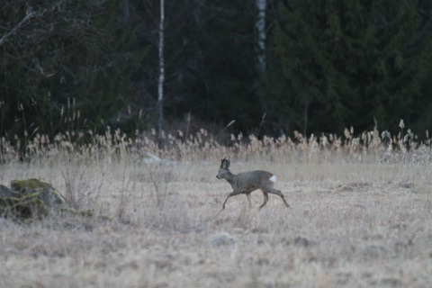
Rådjursbock vid bröderna Mattsons gård Nymnden. De båda bröderna har dock gått ur tiden sedan ett antal år tillbaks . Foto: Ronny Fredriksson
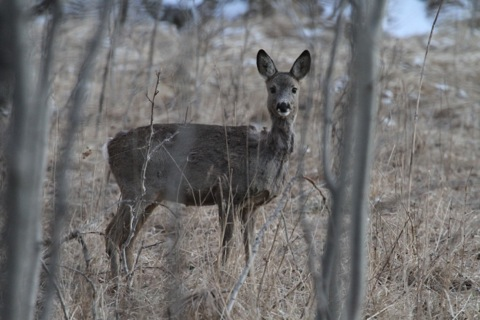
Rådjur. Foto: Ronny Fredriksson
Mård
Jag kan konstatera att mård ser jag inte speciellt ofta. Jag har sett mård två gånger. Ena gången i västra Florarna, i det område som kallas Mixan, när jag var på väg från vägänden där till Prästarby jaktkoja. Kom en mård
springande parallellt med mig i skogen….ett smidigt djur kunde jag konstatera.
Andra gången jag såg mård var i närheten av fd torpet Mörkret på Norrberget. Jag hörde upprörda ekorrar….och gick försiktigt mot ljudet….ekorrarna for så det rasslade runt stammarna….orsaken var en mård….oerhört vackert
djur. Men mårdspår i vintersnön är inte helt ovanligt i Florarna.
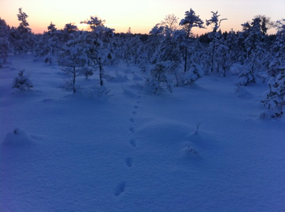
Mårdspår och skymning över Stormossarna i närheten av Orrholmen (östra delen av Florarna). Foto: Ronny Fredriksson
Utter
Sedan cirka 15 år är uttern tillbaks i Florarna efter att ha varit helt borta under mycket många år. Vännen Jörgen berättar att han sett en utter komma simmande när han satt på bergklacken vid Norrbergsån. Själv har jag ännu inte
sett uttrarna i Florarna annat än spår av dem. Skall jag peka ut något område där sannolikheten för att se spår eller se utter är lite bättre så är det kring Skälsjön.
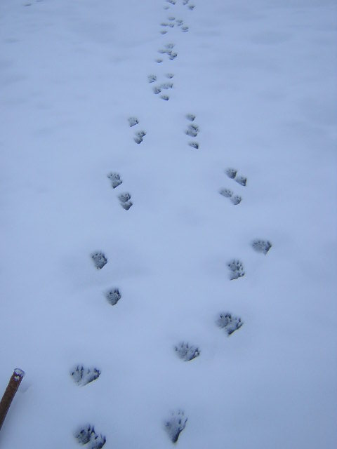
Utterspår på Skälsjön. Foto: Ronny Fredriksson
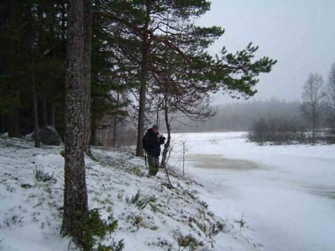
Jag dokumenterar utterspår vid Norrbergsån. Foto: Mikael Karlberg
Lodjur
Lo har en stadig familjegrupp i Florarna med omgivningar och det har varit så under ett antal år. Vintertid ser jag nästan varannan gång jag är ute på skidor lospår. Lo är ett favoritdjur för mig. Från att ha varit väldigt sällsynt har
det idag blivit ganska vanligt. Att se lodjur är dock inte något som tillhör vanligheterna. Under mitt liv har jag haft förmånen att se lo vid två tillfällen. En gång strax öster om Tierp när jag var yngre, på långt håll en vinter på ett
kalhygge i kanten av Stormossen (finns många Stormossar) nära torpet Rosendal.
Andra gången jag såg lo var 2011 på våren. Jag hade varit och spanat vid en slaguggleholk där honan låg och tittade på mig i närheten av Nymnden och på vägen mellan Ingstarbo och Kastudden (vid Finnsjöns norra spets)
kom ett lodjur lugnt utglidande på vägen…stannar upp en kort stund innan det fortsätter in i skogen på Finnsjö sidan. Inte kameran beredd givetvis…suck.
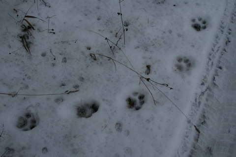
Tydliga stora kattspår på Långåsvägen. Foto: Ronny Fredriksson
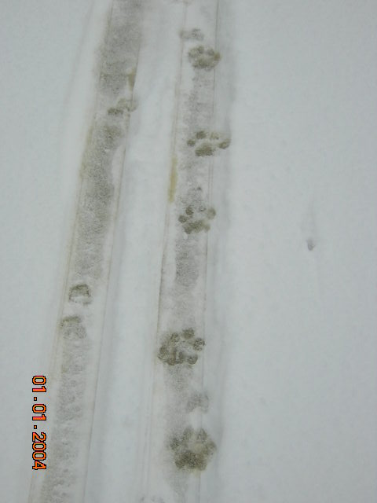
Här hade jag åkt kvällen innan på Gammelåns is. Morgonen efter, på nyårsdagen, när jag kom igen så hade göpa gått i mina spår, även en räv hade varit framme. Foto: Ronny Fredriksson
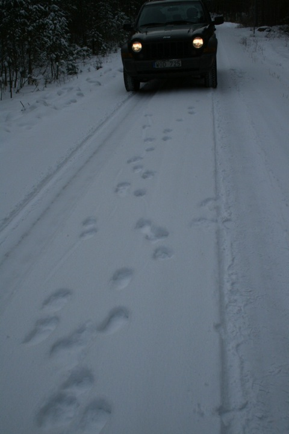
Här har hela familjen lo varit och gått på vägen mellan Karkebo och Stormon. Hmm min gamla bil…saknar den. Inget är som en Jeep. Foto: Ronny Fredriksson
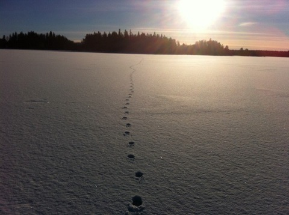
Lospår över Vikasjöns is. Foto: Ronny Fredriksson
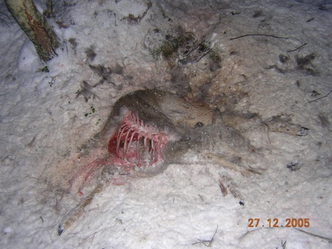
Ett rådjur som ursprungligen slagits av lodjur. Därefter har både örnar, korptar och rävar fått sin mat här. Foto: Ronny Fredriksson
Varg (sällsynt)
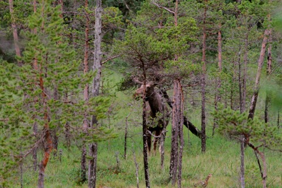
Bilden ovan är det en liten älgtjur på…men notera tjäderhönan som spankulerar strax framför tjuren. Foto: Ronny Fredriksson
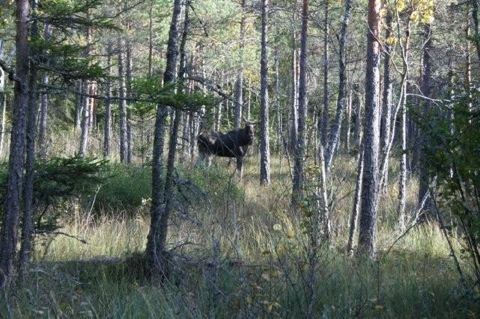
Liten älgtjur vid Stormossarna på östra Florarna. Foto: Ronny Fredriksson